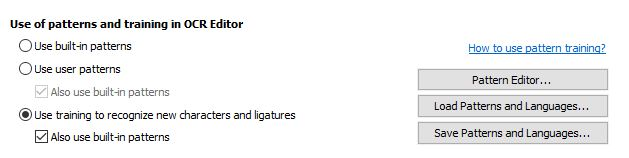
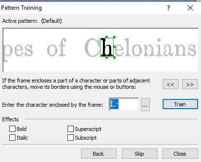

Train OCR
Advanced users can improve recognition with user patterns.
Training the user pattern is a means of optimizing ABBYY FineReader's ability to recognize the printed typeface used in the Encyclopedia. It is usually unnecessary because we have already trained the user pattern. Further training may help if you find AFR is having trouble recognizing clearly-formed letters. This is most likely with words in italics, and more training there is welcome. We only train the machine on perfectly-formed letters, not distorted ones. Training on broken or blurry letter shapes will only confuse the recognition algorithm, resulting in lower accuracy. If you want to try improving the training, follow this procedure.
-
Open . On the OCR tab, select Use
training to recognize new characters and ligatures and
Also use built-in patterns. Select
OK to save and close the window. 
-
When you click Recognize Page, AFR will open the Pattern Training window,
where you can train AFR to do a better job of
recognizing characters. To do this, type the correct letter and click
Train. The recognition engine will continue to the
next character with low confidence.
- Sometimes the green box in the main window captures only part of a letter. In that case, use the buttons marked << >> to adjust the green box. Alternately, you can use the mouse to drag-and-drop the handles.
- Use training judiciously. Only train well-formed characters, not distorted or broken letters.
- Check your updated user pattern in the Pattern Editor, . You can delete characters from the pattern, correct misidentified letters using the Properties menu, and switch attributes like italic and bold on or off.
- Once you are satisfied with your user pattern, close the window.
- Required: To save your changes, return to the OCR tab and click Save Patterns and Languages.
- To turn off further training, select Use user patterns and Also use built-in patterns.